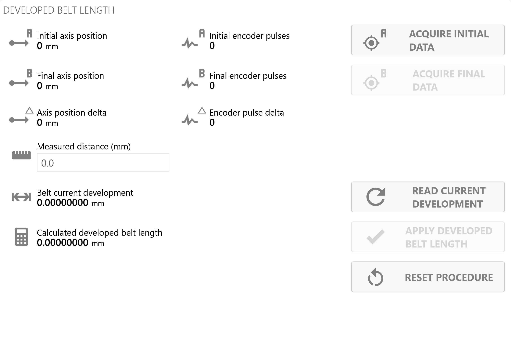
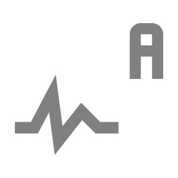
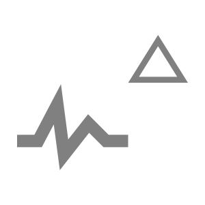

Read belt development, measure a new development and use the separate belt reset command.

Commands
On the top-left section are collected commands for the belt.

 | Reset belt |
Parameters
This section guides the operator through the conveyor belt calibration procedure.

Current belt development | |
 | Read current belt development |
The measurement proceeds from an initial point to a final point. In the icons, A marks initial data, B final data, and Δ their difference.
 | Initial axis position |
 | Initial encoder pulses |
 | Acquire initial data |
 | Final axis position |
Final encoder pulses | |
 | Acquire final data |
 | Axis position delta |
 | Encoder pulse delta |
 | Measured distance |
 | Calculated developed belt length |
Apply developed belt length | |
| Reset procedure |
Belt measurement procedure
At the starting position, select Acquire initial data.
Move the belt with the appropriate machine controls, then select Acquire final data.
Enter the positive Measured distance between the two points. Check the displayed axis position delta, encoder pulse delta and calculated developed belt length.
Select Apply developed belt length and confirm to write the result to the PLC.